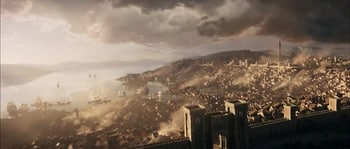

Lugares
“It was the kind of town that made you feel like Humphrey Bogart: you came in on a bumpy little plane, and, for some mysterious reason, got a private room with balcony overlooking the town and the harbor; then you sat there and drank until something happened.”
― Hunter S. Thompson, The Rum Diary

Puertas De Baldur, tanbien llamado el Porton, fue la mas grande metropolis y ciudad estado de La Costa Espada, dentro de las grandes Tierras Centrales Occidentales. es la ciudad poblada del comercio y la oportunidad, quizás la ciudad mercantil más próspera e influyente de la costa occidental de Faerûn. A pesar de su larga presencia como poder neutral, los líderes de las puertas de Baldur eran miembros de la Alianza de Señores de poder del este.
Cualidades
geografia
Alias: "el porton" "muelle gris" "la ciudad de la sangre"
Region: La Costa espada, Tierras Centrales Occidentales
Tamaño: Metropolis
sociedad
Ciudadanos: Baldurianos
Razas: Mayormente Humanos
Religiones: Gond, Tymora, Casco Umberlee, Lathander, Culto del Arbol Muerto.
comercio
Importaciones: Piedra
Exportaciones: tintes, pescado, aceite de lamparas, acuñación comercial
politica
Tipo De Gobierno: Plutocracia
Gobernante: El Consejo de Cuatro
Legislacion: Parlamentaria
Alianzas: Alianza de Señores